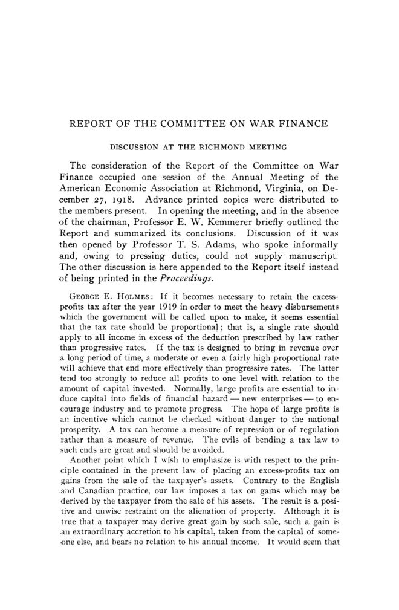

Richmond, 1918: impostos, títulos e inflação em debate
Leitura: 7 min
Na discussão do relatório sobre finanças de guerra, Cummings compara títulos a papel-moeda, Robins ataca a isenção fiscal dos títulos públicos, King quer acabar com o imposto sobre empresas e Bogart defende a comissão.


John Cummings pagava 60 centavos por libra de bacon que antes custava 25 ou 30, e quase tudo custava cerca de US$ 2 pelo que antes saía por US$ 1. Daí tirou, na reunião de Richmond, a conclusão de que financiar a guerra com a emissão de títulos tinha sido uma política financeira errada.
A discussão do relatório da Comissão de Finanças de Guerra ocupou a sessão de tributação de 27 de dezembro de 1918. Os presentes receberam cópias impressas antecipadas; Kemmerer resumiu as conclusões, na ausência do presidente da comissão, e T. S. Adams, do Tesouro, falou de improviso, sem deixar texto. As demais intervenções foram publicadas junto com o relatório.
O que Holmes queria mudar no imposto sobre lucros?
George E. Holmes, de Nova York, aceita que o imposto sobre lucros extraordinários continue depois de 1919, se a receita for necessária, mas com alíquota proporcional. Alíquotas progressivas, diz, tendem a nivelar todos os lucros em relação ao capital, e a esperança de grandes lucros é o que atrai capital para empreendimentos arriscados. Critica também a tributação, ao contrário da prática inglesa e canadense, dos ganhos na venda de ativos, que restringe a circulação da propriedade.
A maior dificuldade, para Holmes, era calcular o capital investido. Propõe um imposto permanente e baixo sobre o direito de exercer atividade empresarial, medido pelo valor dos ativos. O registro desses valores, em tempos normais, daria a base para separar lucros normais de lucros de guerra numa emergência futura.
Por que Cummings comparou títulos a papel-moeda?
Cummings se apresenta como dissidente parcial de artigos de fé quase gerais. Admite papéis de curto prazo emitidos à espera da arrecadação, mas pede que a receita de impostos seja elevada o quanto antes ao nível dos gastos de guerra, e que a partir daí a dívida pare de crescer. Financiar gastos extraordinários com títulos seria, em essência, uma política de papel-moeda: todos os argumentos a favor e contra a emissão de moeda fiduciária valeriam também para ela.
Ninguém na sala, diz Cummings, se sentia tributado até o limite da sua capacidade de pagar. Todos pagariam, nos anos seguintes, não só o custo da guerra, já pago uma vez, mas o custo da inflação e juros sobre um valor inflado desse custo. E pagar a dívida perturbaria de novo os preços: a deflação, diz, é tão iníqua quanto a inflação.
“A inflação é uma medida absolutamente certa e precisa de uma política financeira errada.” (“Inflation is an absolutely certain and accurate measure of unsound financial policy.”)
O imposto, diz Cummings, libera trabalho e capital das indústrias não essenciais e entrega ao governo o poder de direcioná-los. Com a inflação, não há garantia de que o governo receba o que o consumidor paga a mais: ele preferiria pagar diretamente 30 centavos de imposto por libra de bacon a pagar 60 e supor que o varejista e o atacadista repassem a diferença. Também rejeita a distinção entre lucros de guerra e outros lucros: todos deveriam ser tributados pelo que são hoje, sem referência a antes da guerra.
Quanto custava isentar títulos públicos?
Kingman Nott Robins, de Rochester, concorda com a comissão e amplia o argumento contra a isenção de impostos sobre títulos públicos, federais, estaduais e municipais. A isenção contraria o princípio da capacidade de pagar: quanto maior a alíquota do investidor, mais o título isento lhe interessa, e o preço acaba fixado pelos mais ricos. Na época, a diferença de rendimento entre o primeiro empréstimo da Liberdade, isento, e os seguintes era de cerca de 1 ponto, mas para as rendas mais altas um título isento de 3,5% equivalia a um tributável de 10% a 12%.
Robins acrescenta que a isenção tende a se espalhar, porque quem não a tem reclama da discriminação, e cita propostas de bancos de crédito urbano e pessoal financiados com títulos isentos. Lembra que o primeiro empréstimo da Liberdade, de 3,5%, teve juros ajustados às necessidades dos muito ricos, embora o apelo à compra fosse feito a ricos e pobres. Se metade da dívida hipotecária rural do país estivesse em títulos do Federal Farm Loan, calcula, o governo federal poderia perder US$ 66 milhões em isenções. Cita ainda uma comissão da National Tax Association, para a qual a obrigação de contribuir não deve depender da forma do investimento. Recomenda que o governo federal retire toda isenção dos próprios títulos e tribute, até onde puder, os dos estados e municípios.
Por que King queria acabar com o imposto sobre empresas?
Willford I. King elogia o relatório, mas acha que a comissão deveria ter sido mais radical com os impostos sobre empresas. Compara o sistema a uma casa velha que precisa de telhado, encanamento e fornalha novos: melhor derrubá-la. A teoria da capacidade de pagar, diz, se baseia na psicologia dos indivíduos e não se aplica às empresas, meros intermediários que repassam lucros aos acionistas.
King argumenta ainda que, em 1916, os iniciados venderam ações de guerra em alta antes que os impostos fossem conhecidos, e os pequenos compradores que ficaram com elas é que arcaram com o imposto. Tributar diretamente a renda dos indivíduos, com dados de dividendos e da bolsa, teria alcançado quem lucrou. Um imposto pago sem que o contribuinte perceba, conclui, favorece o desperdício.
Como Bogart defendeu a comissão?
E. L. Bogart, o único membro da comissão presente, respondeu às críticas. Sobre a de Frank L. McVey, cujo texto não chegou à revista, lembrou que o relatório se opõe a um imposto federal sobre a terra nas circunstâncias de então. A quem achou o texto conservador demais, disse que a comissão se via como comissão de guerra e que, com o armistício declarado antes do fim dos trabalhos, recomendações para a guerra pareciam extemporâneas; para as finanças do pós-guerra, sugeriu uma nova comissão. E a unanimidade, numa comissão desse tamanho, só se alcança eliminando posições extremas.
“O relatório não deve ser visto como a conclusão da discussão, mas como ponto de partida.” (“The report is not to be regarded as the conclusion of the discussion, but rather if you will as the starting point.”)
Na minha leitura
Na minha leitura, o debate separa duas perguntas que o relatório tratava juntas. Uma é de nível: quanto da guerra pagar com impostos e quanto com dívida. Cummings responde com a experiência dos preços e com um argumento de alocação, o de que o imposto libera recursos reais e o empréstimo bancário apenas os disputa.
A outra é de incidência: quem paga de fato. Robins mostra com aritmética simples que uma isenção pode custar ao fisco muito mais do que entrega ao beneficiário pretendido, e King aplica o mesmo raciocínio ao imposto sobre empresas, perguntando se ele recai sobre quem lucrou ou sobre quem comprou as ações depois.
Glossário
- Títulos isentos
- títulos públicos cujos juros não pagam imposto de renda, total ou parcialmente.
- Federal Farm Loan
- sistema federal de crédito hipotecário rural, financiado com títulos isentos de impostos.
- Alíquota proporcional
- taxa única sobre toda a base, ao contrário da progressiva, que cresce com a base.
- Capacidade de pagar
- princípio segundo o qual cada contribuinte deve pagar conforme sua renda ou riqueza.
Fontes
- Report of the Committee on War Finance: Discussion at the Richmond Meeting — George E. Holmes, John Cummings, Kingman Nott Robins, Willford I. King e E. L. Bogart (pp. 129–142). JSTOR · Internet Archive (PDF)
- Edição completa, com os demais artigos: Nº 157 do Arquivo.
Documento em domínio público (EUA, publicado antes de 1931), via JSTOR Early Journal Content e Internet Archive. Resumo e comentário do autor deste site, sem afiliação com a American Economic Association. Encontrou um erro? Escreva: a correção é publicada no próprio texto, com data.
← Finanças de guerra, 1918: o imposto sobre lucros e as 402 empresas ↑ Nº 157 · Finanças de guerra, 1918: impostos, empréstimos e inflação